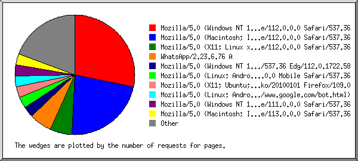

(Go To: Top | General Summary | Monthly Report | Daily Summary | Hourly Summary | Domain Report | Organization Report | Redirected Referrer Report | Failed Referrer Report | Referring Site Report | Browser Report | Browser Summary | Operating System Report | Status Code Report | File Size Report | File Type Report | Directory Report | Request Report)

Listing browsers with at least 1 request for a page, sorted by the number of requests for pages.
| #reqs | #pages | browser |
|---|
| 404 | 14 | Mozilla/5.0 (Macintosh; Intel Mac OS X 10_15_7) AppleWebKit/537.36 (KHTML, like Gecko) Chrome/112.0.0.0 Safari/537.36 |
| 473 | 12 | Mozilla/5.0 (Windows NT 10.0; Win64; x64) AppleWebKit/537.36 (KHTML, like Gecko) Chrome/112.0.0.0 Safari/537.36 |
| 35 | 4 | Mozilla/5.0 (X11; Linux x86_64) AppleWebKit/537.36 (KHTML, like Gecko) Chrome/112.0.0.0 Safari/537.36 |
| 128 | 2 | Mozilla/5.0 (Windows NT 10.0; Win64; x64) AppleWebKit/537.36 (KHTML, like Gecko) Chrome/112.0.0.0 Safari/537.36 Edg/112.0.1722.58 |
| 18 | 2 | Mozilla/5.0 (Linux; Android 11; SOV41) AppleWebKit/537.36 (KHTML, like Gecko) Chrome/112.0.0.0 Mobile Safari/537.36 |
| 34 | 2 | Mozilla/5.0 (X11; Ubuntu; Linux x86_64; rv:109.0) Gecko/20100101 Firefox/109.0 |
| 43 | 2 | Mozilla/5.0 (Windows NT 10.0; Win64; x64) AppleWebKit/537.36 (KHTML, like Gecko) Chrome/111.0.0.0 Safari/537.36 |
| 2 | 2 | Mozilla/5.0 (Macintosh; Intel Mac OS X 10_9_2) AppleWebKit/537.36 (KHTML, like Gecko) Chrome/33.0.1750.152 Safari/537.36 |
| 2 | 2 | Mozilla/5.0 AppleWebKit/537.36 (KHTML, like Gecko; compatible; bingbot/2.0; +http://www.bing.com/bingbot.htm) Chrome/103.0.5060.134 Safari/537.36 |
| 2 | 2 | WhatsApp/2.23.6.76 A |
| 2 | 2 | Mozilla/5.0 (X11; Linux x86_64; rv:83.0) Gecko/20100101 Firefox/83.0 |
| 8 | 1 | Mozilla/5.0 (Windows NT 6.1; Win64; x64) AppleWebKit/537.36 (KHTML, like Gecko) Chrome/83.0.4103.61 Safari/537.36 |
| 1 | 1 | WhatsApp/2.23.7.78 A |
| 17 | 1 | Mozilla/5.0 (Linux; Android 6.0.1; Nexus 5X Build/MMB29P) AppleWebKit/537.36 (KHTML, like Gecko) Chrome/112.0.5615.142 Mobile Safari/537.36 (compatible; Googlebot/2.1; +http://www.google.com/bot.html) |
| 17 | 1 | Mozilla/5.0 (Linux; Android 11; SOV40) AppleWebKit/537.36 (KHTML, like Gecko) Chrome/110.0.5481.192 Safari/537.36 OPR/74.1.3922.71199 |
| 17 | 1 | Mozilla/5.0 (X11; Linux x86_64) AppleWebKit/537.36 (KHTML, like Gecko) HeadlessChrome/111.0.5563.64 Safari/537.36 |
| 1 | 1 | Mozilla/5.0 (compatible; Googlebot/2.1; +http://www.google.com/bot.html) |
| 17 | 1 | Mozilla/5.0 (Windows NT 10.0; Win64; x64) AppleWebKit/537.36 (KHTML, like Gecko) Chrome/79.0.3945.79 Safari/537.36 |
| 14 | 0 | [not listed: 2 browsers] |
 Web Server Statistics for e-raport.sdn1kalibagorkebumen.sch.id
Web Server Statistics for e-raport.sdn1kalibagorkebumen.sch.id ) represents 2 requests for pages or part thereof.
) represents 2 requests for pages or part thereof.